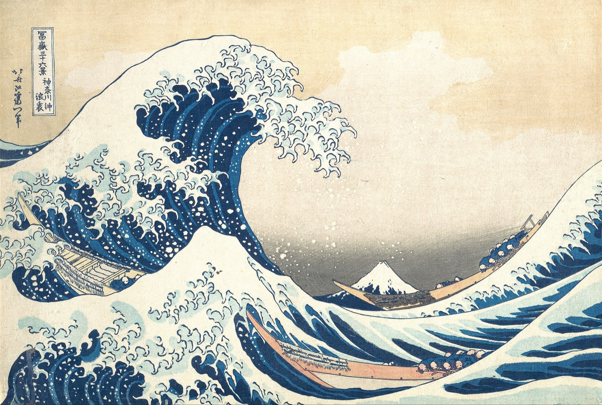

Yetmişine yaklaşan bir ressam
Eserin asıl adı Kanagawa Açıklarında Dalganın Altında; dünya onu kısaca Büyük Dalga diye tanıyor. Japon sanatçı Katsushika Hokusai (1760–1849) bu baskıyı yaklaşık 1830–32 yıllarında, Fuji Dağı'nın Otuz Altı Manzarası adlı serinin bir parçası olarak tasarladı [1]. British Museum'a göre seri yaklaşık 1829–1833 arasında yayımlandı; Hokusai o sırada altmışlarının sonunda, yetmişlerinin başındaydı [3].
Hokusai uzun hayatı boyunca otuzdan fazla sanatçı adı kullandı. Bunlardan biri “Gakyōjin”, yani kabaca “resim delisi”ydi [3]. Bu dalga da aslında bir ömrün birikimi: British Museum küratörü Timothy Clark, Hokusai'nin bu kompozisyonu otuzlu ve kırklı yaşlarında birkaç kez denediğini, o yıllarda Avrupa resminden gelen derinlik ve perspektif fikirlerini öğrendiğini yazıyor [3].

The Metropolitan Museum of Art, New York (JP1847) · Kamu malı, Wikimedia Commons
Dalga mı büyük, dağ mı?
Resme bir daha bak. Ön planda, balığı Edo (bugünkü Tokyo) pazarına yetiştirmek için hızla kürek çeken balıkçıların kayıkları var. Üstlerinde, tam kırılmak üzere olan dev bir dalga. Ve dalganın kavsinin içinde, küçük bir üçgen gibi duran Fuji Dağı: Japonya'nın en yüksek dağı [3].
The Met'in koleksiyon notuna göre Hokusai perspektifle ustaca oynayarak bu büyük dağı dalganın içinde küçük bir tümsek gibi gösterdi [1]. British Museum kaydı da ince bir şakaya dikkat çekiyor: dalganın tepesinden saçılan köpükler, uzaktaki zirveye kar gibi yağıyor sanki [3]. Ön planda bir an sonra olacak felaket, arkada ise hiç kıpırdamayan, karla örtülü bir dağ. Resmin gerilimi bu ikisinin arasında.
Büyük Dalga'nın gücü, kırılmadan hemen önceki o tek ânı sonsuza kadar asılı tutmasında.
Bir resim değil, bir ekip işi
Büyük Dalga'yı tek başına bir “tablo” gibi düşünmek yanıltıcı olur. Bu bir ahşap baskı: Hokusai tasarımı çizdi, ama kalıpları yayıncının görevlendirdiği usta bir oymacının atölyesi kesti, baskıyı ise ayrı bir atölye yaptı. British Museum'a göre bu tür tasarımlar kiraz ağacından kalıplara oyuluyordu ve Büyük Dalga, Hokusai'nin birçok baskısına göre daha az kalıpla basılmıştı: sudaki üç ayrı mavi tonu, kayıkların sarısı, gökyüzünün siyahı ve grisi, bulutlardaki çoğu nüshada zor seçilen pembe için ayrı kalıplar kullanıldı [3].
Baskıların sayısı da şaşırtıcı. Timothy Clark'a göre yıllar içinde her tasarımdan 8.000'e kadar nüsha basılmış olabilir ve Edo'da herkes, iki porsiyon eriştenin biraz üzerinde bir fiyata kendi Büyük Dalga'sını alabiliyordu [3]. Seri o kadar sevildi ki on manzara daha eklendi [3]. Bugün yüzlerce nüsha hayatta [3]. Yani Büyük Dalga, doğduğu anda bile bir “müze parçası” değil, sokaktaki insanın duvarına asabileceği bir imgeydi.
O mavi nereden geliyor?
Büyük Dalga'yı unutulmaz yapan şeylerin başında rengi geliyor. Seriyi yayımlayan Eijudō, 1831 Yeni Yılı'na doğru baskıları reklam ederken öne çıkardığı yenilik, baskı piyasası için yeni bulunabilir hâle gelen egzotik bir pigmentti: Prusya mavisi [2]. Avrupa'da “Berlin” ya da “Prusya mavisi” denen bu sentetik pigment o yıllarda Japon yayıncılara Çin üzerinden kolayca ve ucuza ulaşıyordu; indigo gibi eski doğal mavilerin aksine solmuyordu, bu yüzden çok daha yoğun kullanılabiliyordu [3].
The Met'in bilim insanları işi bir adım daha ileri götürdü. Müzenin bilimsel araştırma bölümünden Marco Leona'nın aktardığına göre spektroskopik incelemeler, ustaların yeni maviyi geleneksel indigonun yerine öylece koymadığını gösteriyor. İkisini karıştırarak koyu bir dış çizgi elde etmişler, sonra bir pigmenti ötekinin üzerine basarak parlak Prusya mavisini rengin canlılığını öldürmeden koyulaştırmışlar [2]. İki kez basılan koyu mavi kâğıda daha derin gömülüyor; elinde baskıyı tutan biri, köpüğün beyazı, açık mavi ve koyu mavi arasında neredeyse fark edilmeyen küçük basamaklar hissediyor [2].
Leona'nın yazısı güzel bir hatırlatmayla bitiyor: Hokusai bu eserin yaratılmasında yer alan sanatçılardan yalnızca biri, ama adını bildiğimiz tek kişi [2].
Denizi aşan bir dalga
Japonya 1850'lerde Batı'yla ticarete açılınca Japon baskıları Avrupa'da, özellikle Fransa'da büyük bir merak uyandırdı; bu akıma japonizm deniyor [4]. Büyük Dalga, British Museum'a göre 1870'lerin sonundan itibaren Fransız koleksiyoncular ve sanatçılar arasında hızla ün kazandı [3].
Hayranlarından biri Vincent van Gogh'tu. 8 Eylül 1888'de Arles'dan kardeşi Theo'ya yazdığı mektupta Hokusai'nin dalgaları için “dalgalar pençe, kayık onlara kapılmış, bunu hissediyorsun” diyordu [5]. Van Gogh uzmanı gazeteci Martin Bailey, Van Gogh'un ertesi yıl, Haziran 1889'da yaptığı Yıldızlı Gece'nin (Vincent van Gogh, 1889, Museum of Modern Art, New York) gökyüzündeki girdabın kısmen bu dalgadan esinlenmiş olabileceğini öne sürüyor; bunun kesin bir bilgi değil, bir yorum olduğunu da belirtmek gerek [5]. Bailey aynı yazıda Claude Monet'nin ve Henri Rivière'in de birer nüsha edindiğini aktarıyor [5].
Dalga müziğe de ulaştı. The Met'in yazısına göre besteci Claude Debussy'nin çalışma odasının duvarında çerçeveli bir Büyük Dalga asılıydı ve Debussy, 1905'te A. Durand & Fils tarafından yayımlanan orkestra eseri La Mer'in (Deniz) ilk baskısının kapağına bu baskıdan kırpılmış bir detay koydurdu [4]. Hatta kendi adını, kapakta Hokusai'nin imzasının durduğu yere, dalganın üstündeki gökyüzüne yerleştirdi [4]. The Met'in koleksiyon notu, baskının şair Rilke'nin Der Berg (Dağ) adlı eserine de esin kaynağı olduğunun söylendiğini ekliyor [1].
Bugün nerede?
Büyük Dalga tek bir eser değil, birçok nüshası olan bir baskı. Bu yüzden onu dünyanın pek çok büyük müzesinde görmek mümkün. New York'taki The Met'in nüshası 1929'da H. O. Havemeyer koleksiyonuyla müzeye geldi ve müzenin araştırmacılarına göre muhtemelen ilk basılan nüshalardan biri [1][2]. Londra'daki British Museum'un nüshası 2008'de koleksiyona girdi; küratörlere göre bugün bilinen en iyi yirmi kadar nüsha arasında [3]. İki müzenin koleksiyon kayıtlarında da baskının şu an sergide olmadığı yazıyor; görmeye gitmeden önce müzenin sayfasına bakmakta fayda var [1][3].
Bir dahaki sefere bakarken
Büyük Dalga'yı bir kupada ya da posterde gördüğünde birkaç şeye dikkat et:
- Dağı bul. Fuji, dalganın kavsinin içinde küçücük duruyor. Gözün önce dalgaya mı gitti, dağa mı?
- Mavileri say. Suda tek bir mavi yok; açık, orta ve koyu tonlar dalgaya hareket veriyor.
- İnsanları ara. Kayıklarda başlarını eğmiş kürekçiler var. Dalganın büyüklüğünü asıl onlar sayesinde hissediyoruz.
- İmzayı fark et. Gökyüzündeki yazıların arasında Hokusai'nin imzası var: “Hokusai adını Iitsu olarak değiştiren sanatçının fırçasından” [3]. O yıllarda Iitsu adını kullanıyordu.
Belki de Büyük Dalga'yı bu kadar sevmemizin nedeni bu: Bir yanda ustaca kurulmuş bir kompozisyon, öbür yanda herkesin anlayabileceği basit bir duygu. Denizin karşısında küçük olduğumuzu hatırlatıyor, ama dağ hâlâ yerinde duruyor.